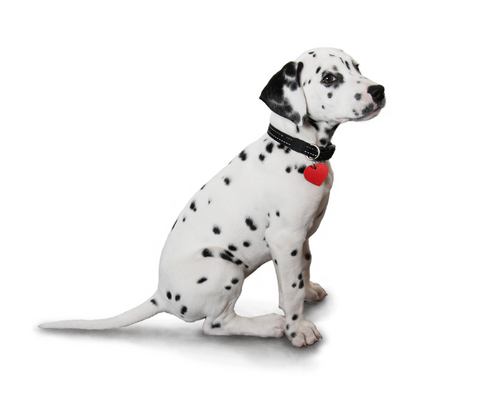
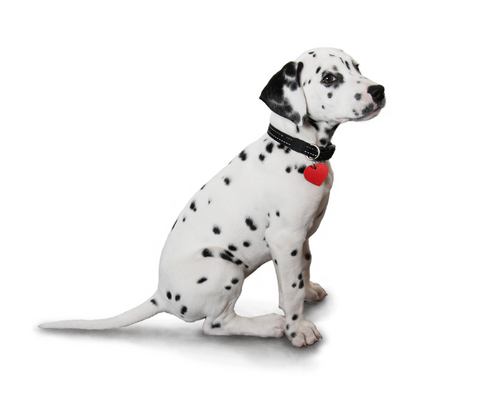

La raza dálmata...
La raza dálmata...
 

Sonido Cloid Rabiosa:
El dálmata es una raza de perro originaria de Croacia que debe su nombre a la histórica región de Dalmacia, ubicada en la costa del mar Adriático. Su característica principal es su singular pelaje blanco con manchas de color negro, hígado o limón. Al nacer, los cachorros carecen de manchas, las cuales van apareciendo por todo su cuerpo durante el primer año de vida. La hiperuricemia es común entre los dálmatas, por lo cual suelen ser considerados los únicos mamíferos uricotélicos. Otro rasgo de origen genético propio de la raza es su alta predisposición a la sordera.
Acompañaba a los carruajes de caballos sirviendo como perro guardián, por lo que es el perro tradicional de los bomberos y los establos. También se ha empleado como pastor y en ocupaciones relacionadas con las guerras. Durante el Período Regencia se utilizó en Inglaterra para hacer compañía a los carruajes de la aristocracia, ya que era un símbolo de estatus para la nobleza que un perro de este tipo corriera junto a los caballos que tiraban de su carruaje. A partir de la película 101 dálmatas de Disney, en 1961, su popularidad se incrementó.